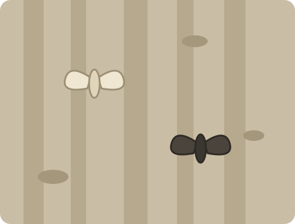

Peppered Moths
Natural selection is bookkeeping, not intent. You are the bird. Eat the moths you can see, breed the survivors, and watch the population shift under your own beak.

The era advances on its own every 4 generations. The buttons unlock after generation 12.
How this works: twenty moths sit on bark at random positions. Moths that contrast with the bark are easier for you to spot, so they get eaten more. The next generation is drawn from the survivors' color frequency, plus a small mutation rate. That is a shortcut: it tracks the population's color mix rather than individual genotypes. Population size and catches per round are fixed so the simulation cannot be broken.
Industrial melanism, the case everyone cites
Before the 1800s, almost every peppered moth in Britain was pale and speckled, which matched the lichen on the trees it rested on. Coal soot killed the lichen and darkened the bark, and within a few decades dark moths went from rare to dominant near industrial cities. After the Clean Air Acts of the mid-twentieth century the bark lightened again, and the pale form recovered. Field biologists watched the whole reversal happen, which is what makes this the textbook case: selection observed in a wild population, in both directions, on a timescale a person can live through.
The important part is what selection did not do. No moth changed color to hide better, and soot did not cause dark moths to appear. Both forms already existed in the population, produced by an ordinary genetic difference. Changing the bark changed only which of the two got eaten first, and eating is the whole mechanism. Selection sorts variation that is already there, generation after generation, and the population average drifts as a side effect of who survived to breed.
This simulation is honest about being simple. Real inheritance in peppered moths runs on a single dominant allele. This model does not track alleles at all. It measures the color mix of whoever survived and draws the next generation from that, which reproduces the trend without the genetics. Real populations also move between trees, face several predators, and number in the thousands. Twenty moths and a fixed budget of eight catches will not give you publication-grade numbers. Ten generations will give you the shape of the effect, and if you switch eras halfway through, you can watch it run backwards.